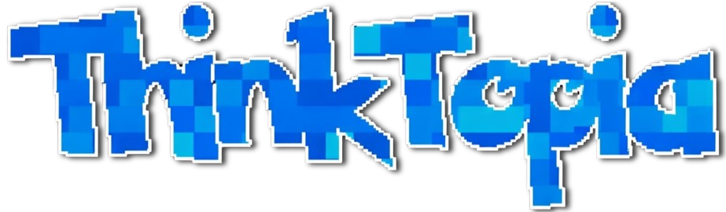
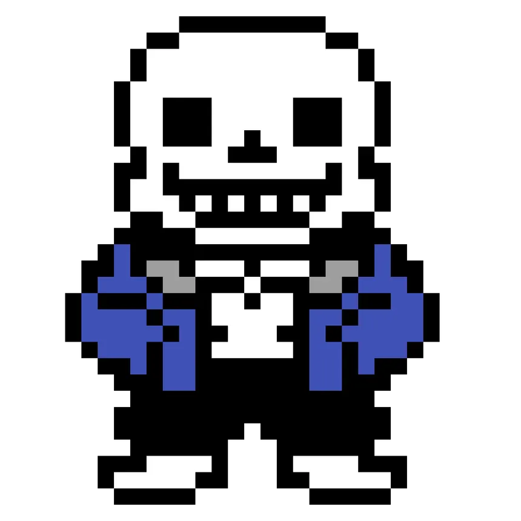

¡Bienvenidos a!


sans mensajesubliminalchelbyesputo
¿ Que es THINKTOPIA PRIMARIA?
Thinktopia Primaria es un espacio educativo diseñado para estudiantes de 1° a 6° de primaria,
donde aprender se combina con la diversión a través de minijuegos interactivos.
Ofrecemos títulos como Baldi's basics, k-pop demon hunters guardianas del bien y muchos más,
todas las materias y los temas más importantes del nivel primario.
Nuestra plataforma permite a los niños reforzar conocimientos mientras desarrollan habilidades cognitivas,
pensamiento creativo y resolución de problemas, todo de manera lúdica y entretenida.
En Thinktopia, aprender se convierte en una experiencia divertida y motivadora,
donde cada juego es una oportunidad para descubrir, explorar y crecer.


© 2025-2026 thinktopia
todo este universo digital, desde el último pixel hasta la idea más desvelada, está protegido por todos los dioses supremos de cptics.
queda estrictamente prohibido copiar, reproducir, clonar, imitar, descargar, modificar, invocar, reciclar o intentar apropiarse de cualquier fragmento de este contenido sin la bendición directa del panteón cptics.
when haces tus momos en tu pagina el futuro es hoy oiste viejo
pero Eli te termina suspendiendo ooo mi lente de contacto
© thinktopia 2025-2026